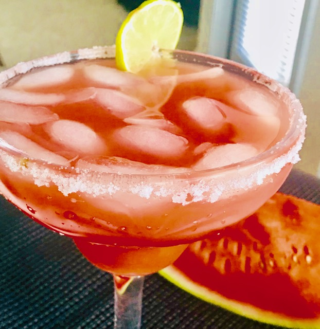

                                    <figure class="cards double">                                        
                                        <figcaption class="caption">
                                        
                                            <!--  Copy your recipie in here -->
                                            <h1><span style="color: #ff0000;">Watermelon Margarita</span></h1>
<p>&nbsp;</p>
<p><strong>Ingredients</strong></p>
<ul>
<li>Watermelon cubed 2 -3 cups</li>
<li>Lemon juice from 1 lemon</li>
<li>Tequila 1 cup</li>
</ul>
<p><strong>Method</strong></p>
<p>Blend all of the above in a blender and strain through a mesh.</p>
<p>Dip margarita glass rim in lemon juice and then in salt.</p>
<p>Pour margarita into glass and top with ice. Place a lemon wedge on the glass rim.</p>
<p>Enjoy!!!</p>

                                            <!-- Copy Up to here-->

                                        </figcaption>
                                        
                                    </figure>
                                    
                                    